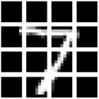
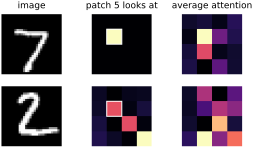

We began with a list of five numbers and an @ sign. We have ended with networks that recognize photographs, learn new categories from a few hundred examples, and imagine sneakers that do not exist. Let’s step back and see how few ideas that took, and then follow the same ideas to the large systems in use today.
What we built, and from what
Every network in this book was assembled from the same small set of parts:
Weighted sums. The dot product of Chapter 6, organized as matrix multiplications (fully connected layers) or sliding windows (convolutions).
Nonlinearities. The bend of a ReLU between layers, without which any stack of layers collapses into one.
A loss. A smooth measure of how wrong the network is: cross-entropy for classifying, squared error for reconstructing, and the discriminator’s verdict for generating.
Gradient descent. Autograd computes which way is downhill for every weight at once, and an optimizer takes the step.
Data. Lots of examples, ideally, and when there are few, the borrowed experience of a network trained on many.
Everything else is arrangement and scale. AlexNet is our Fashion-MNIST network with more layers and more kernels; transfer learning is AlexNet with a new last layer; the GAN generator is the autoencoder’s decoder trained by a different teacher.
Since 2012 the field has added a handful of further parts, and two of them matter here. Residual connections, which made networks of more than a hundred layers trainable in 2015, let each block add its output to its input instead of replacing it, so that information and gradients have a direct path through the whole stack. And attention, introduced in 2014 for translating text and made the whole of a network by the transformer of 2017, is the engine of every large language model since. Attention is the one piece we have not yet built, so let’s build it.
Images as tokens
A transformer works on a sequence of tokens. In a language model a token is a piece of text, a word or part of a word, and each token is turned into a list of numbers. Images can be treated the same way. We go back to the MNIST digits, so that we can compare the result with the fully connected network of Chapter 12, and hold back 10,000 training images for validation. get_batch and accuracy are the helpers from Chapter 11, and the weight helper layer is the one from Chapter 14, which stores weights as (outputs, inputs) for F.linear.
import torch
import torch.nn.functional as F
from torchvision.datasets import MNIST
torch.manual_seed(0)
device = ('cuda' if torch.cuda.is_available()
else 'mps' if torch.backends.mps.is_available() else 'cpu')
def load(train):
ds = MNIST('data', train=train, download=True)
return (ds.data.float() / 255.0).to(device), ds.targets.to(device)
X, Y = load(train=True) # (60000, 28, 28), values 0-1
X_test, Y_test = load(train=False)
X, X_val = X[:50000], X[50000:] # 10,000 held out for validation
Y, Y_val = Y[:50000], Y[50000:]
print(tuple(X.shape), len(X_val), len(X_test))(50000, 28, 28) 10000 10000
Cut an image into a grid of patches and flatten each patch, and the image becomes a sequence of 16 patches of 49 numbers each (Figure 20.1). That is how the vision transformer reads an image.
def patches(x): # (n, 28, 28) -> (n, 16, 49)
x = x.reshape(-1, 4, 7, 4, 7).permute(0, 1, 3, 2, 4)
return x.reshape(-1, 16, 49)
tokens = patches(X_test[:1])[0]
print(tokens.shape)
plt.figure(figsize=(2.2, 2.2))
for i in range(16):
plt.subplot(4, 4, i + 1)
plt.imshow(tokens[i].reshape(7, 7).cpu(), cmap='gray', vmin=0, vmax=1)
plt.axis('off')
plt.show()torch.Size([16, 49])

The two lines of patches are the only tricky code in this chapter, so here they are on a tiny “image” of the numbers 0 to 15, cut into four patches:
a = torch.arange(16).reshape(1, 4, 4) # a tiny 4x4 "image"
blocks = a.reshape(1, 2, 2, 2, 2) # (image, block row, row,
# block column, column)
small = blocks.permute(0, 1, 3, 2, 4) # the two block indices first
print(a[0])
print(small.reshape(1, 4, 4)[0]) # one 2x2 patch per rowtensor([[ 0, 1, 2, 3],
[ 4, 5, 6, 7],
[ 8, 9, 10, 11],
[12, 13, 14, 15]])
tensor([[ 0, 1, 4, 5],
[ 2, 3, 6, 7],
[ 8, 9, 12, 13],
[10, 11, 14, 15]])reshape does not move any numbers; it only changes how they are counted. Reading the 16 numbers as (block row, row within the block, block column, column within the block) labels every pixel with the patch it belongs to. permute reorders those labels so that the two block indices come first, and a final reshape lays each patch out as one row: the top-left patch is 0, 1, 4, 5. For MNIST the same two lines use blocks of 7 instead of 2.
Two more steps turn patches into tokens. First, each patch of 49 pixels is multiplied by a learned weight matrix, a fully connected layer, to give a token of 64 numbers. Raw pixels are a poor description of a patch; the learned projection lets training decide which 64 measurements of a patch are worth having, much as the first layer of a CNN learns its kernels.
Second, each token gets a position embedding added to it: a list of 64 learned numbers that belongs to its place in the grid, one for each of the 16 positions. This is needed because attention, as we will see, treats its tokens as an unordered collection. Shuffle the 16 patches and, without position embeddings, the network could not tell the difference. A convolution knows where everything is, because it slides over a grid; attention must be told.
Attention
The central operation of a transformer is attention. Every token computes three things with three weight matrices: a query (what it is looking for), a key (what it has to offer), and a value (what it will pass on). Then four steps:
The dot product of every query with every key scores how relevant each token is to each other token.
The scores are divided by the square root of the number of numbers in each query and key, which keeps them in a range where the softmax is not too sharp (the square-root law of Chapter 9 again).
A softmax turns each token’s scores into weights that add up to one.
Each token receives the weighted mixture of everyone’s values.
Here are the four steps done by hand on three tokens of two numbers each. To keep it small, the query and key of each token are just the token itself, and each value is a single number:
t = torch.tensor([[1.0, 0.0], # three tokens of two numbers
[0.0, 1.0],
[1.0, 1.0]])
Q, K = t, t # as if query and key layers did nothing
V = torch.tensor([[10.0], [20.0], [30.0]]) # what each token passes on
scores = Q @ K.T / 2 ** 0.5 # every query against every key
A = scores.softmax(dim=1) # each row adds up to 1
print(scores)
print(A)
print(A @ V) # each token's mixture of the valuestensor([[0.71, 0.00, 0.71],
[0.00, 0.71, 0.71],
[0.71, 0.71, 1.41]])
tensor([[0.40, 0.20, 0.40],
[0.20, 0.40, 0.40],
[0.25, 0.25, 0.50]])
tensor([[20.00],
[22.03],
[22.55]])Read the table of scores row by row. The first token, , has a positive dot product with itself and with the third token, , and zero with the second, so after the softmax it gives weights 0.40, 0.20 and 0.40 and receives the mixture . The third token matches everyone, itself most, and receives about 22.5. Every token has looked at every other token, decided how much each one matters to it, and taken a blend of what they offer. In a real transformer the query, key and value come from learned weight matrices, so training decides what each token looks for.
Our model has one attention layer. Its output is added to the tokens, a residual connection like the ones that made 2015’s very deep networks trainable, so that each token keeps what it had and gains a mixture of what the others offer. A small two-layer network then processes each token on its own, again added to it. Finally, the 16 tokens are averaged into one list of 64 numbers, and a last linear layer turns that into ten class scores. The weights, in a list w as usual:
d = 64 # numbers per token
position = 0.1 * torch.randn(16, d, device=device)
w = (layer(49, d) # w[0], w[1]: patch -> token
+ [position.requires_grad_()] # w[2]: one vector per position
+ layer(d, d) # w[3], w[4]: query
+ layer(d, d) # w[5], w[6]: key
+ layer(d, d) # w[7], w[8]: value
+ layer(d, 2 * d) # w[9] to w[12]: a small network
+ layer(2 * d, d) # applied to each token
+ layer(d, 10)) # w[13], w[14]: 10 class scores
print(sum(p.numel() for p in w))33930
That is about 34,000 weights, a twelfth of the convolutional network of Chapter 14. The model itself:
def model(x, w):
t = F.linear(patches(x), w[0], w[1]) + w[2] # (n, 16, d) tokens
Q = F.linear(t, w[3], w[4]) # what each token looks for
K = F.linear(t, w[5], w[6]) # what each token offers
V = F.linear(t, w[7], w[8]) # what each token passes on
scores = Q @ K.transpose(1, 2) / d ** 0.5 # (n, 16, 16)
A = scores.softmax(dim=2) # each row sums to 1
t = t + A @ V # add a mix of the others
t = t + F.linear(F.relu(F.linear(t, w[9], w[10])), w[11], w[12])
return F.linear(t.mean(dim=1), w[13], w[14]), A
scores, A = model(X[:5], w)
print(scores.shape, A.shape)torch.Size([5, 10]) torch.Size([5, 16, 16])
Look at what the attention part contains: three fully connected layers, a matrix of dot products scaled by a constant, a softmax, and one more matrix multiplication. Every one of them appeared in Chapters 6 to 12, and in the toy example above. Two things are new. Our tensors now have a batch axis, (images, 16, 64), and @ on such tensors multiplies the last two axes separately for every image. transpose(1, 2) swaps the last two axes of K, the batched version of K.T, so that Q @ K.transpose(1, 2) gives, for each image, the table of dot products between every query and every key. Training is the loop we have used since Chapter 11:
optimizer = torch.optim.Adam(w, lr=0.001)
for step in range(8001):
x, y = get_batch(X, Y, 128)
loss = F.cross_entropy(model(x, w)[0], y)
optimizer.zero_grad()
loss.backward()
optimizer.step()
if step % 1000 == 0:
with torch.no_grad():
acc = accuracy(model(X_val, w)[0], Y_val)
print(step, round(loss.item(), 3), round(acc, 4))0 3.31 0.1079 1000 0.403 0.9125 2000 0.333 0.9422 3000 0.101 0.9509 4000 0.105 0.9586 5000 0.066 0.9603 6000 0.074 0.9636 7000 0.045 0.964 8000 0.061 0.9633
with torch.no_grad():
scores, _ = model(X_test, w)
print('test accuracy:', round(accuracy(scores, Y_test), 4))test accuracy: 0.9601
How good is it, and what does it look at?
96.0 percent on the test set, from 33,930 weights and well under a minute of training on a laptop. The fully connected network of Chapter 12 reached 98.1 percent with eight times as many weights, so our tiny transformer is not the better digit reader. That should not be a surprise. Apart from cutting the image into patches and treating every patch the same way, attention, like a fully connected layer, assumes almost nothing about images: it has to learn from data which patches matter to which and, through the position embeddings, even where each patch is. A convolution, by contrast, comes with built-in assumptions that suit images: nearby pixels matter together, and the same pattern means the same thing anywhere in the picture. The flexibility of attention pays off at scale. The original vision transformer beat the best convolutional networks only after being pretrained on about 300 million images. Here, the point is not the score but that you have built one.
We can look inside. A holds, for every patch, the attention weights it gives to all 16 patches. Here is where patch 5 (second row, second column) looks in the second test image, a 2, laid out as the grid. (np.kron in the helper heat blows each of the 16 weights up into a block, so that the grid can be drawn at the size of the image.)
with torch.no_grad():
_, A = model(X_test[:2], w)
print(A[1, 5].reshape(4, 4).cpu()) # where patch 5 looks, in image 1
def heat(a): # 16 weights -> 28x28 picture
return np.kron(a.reshape(4, 4).cpu().numpy(), np.ones((7, 7)))
plt.figure(figsize=(4.6, 2.4))
for row in range(2):
image, a = X_test[row].cpu(), A[row]
panels = [(image, 'image'), (heat(a[5]), 'patch 5 looks at'),
(heat(a.mean(dim=0)), 'average attention')]
for col, (p, title) in enumerate(panels):
plt.subplot(2, 3, 3 * row + col + 1)
plt.imshow(p, cmap='gray' if col == 0 else 'magma')
if col == 1:
plt.gca().add_patch(plt.Rectangle((6.5, 6.5), 7, 7,
fill=False, ec='white', lw=1))
if row == 0:
plt.title(title)
plt.axis('off')
plt.show()tensor([[ 0.02, 0.00, 0.02, 0.02],
[ 0.03, 0.21, 0.01, 0.04],
[ 0.04, 0.00, 0.20, 0.01],
[ 0.05, 0.02, 0.01, 0.33]])
In the 2, patch 5 spreads its attention: a fifth on itself, a fifth on the patch diagonally below it, and a third on the bottom-right corner, where the 2’s base stroke ends. In the 7, patch 5 attends only to itself. The averages on the right show that attention is concentrated on a few patches, but they are not simply the patches with the most ink. In the 7, the patch below the left end of the bar is empty, yet it receives the second-most attention; in the 2, the patch that holds most of the diagonal stroke receives almost none. The network has found its own use for the mechanism, and with one layer and one head, that use is not easy to put into words. Interpreting what large transformers attend to is an active research problem.
A real transformer stacks dozens of such layers, each with several attention computations side by side (heads), each free to look for something different. It is the same layer, many times over, with one addition that helps very deep stacks train: layer normalization, which rescales each token to a standard size before each attention and each small network.
From attention to language models
How is a language model like ChatGPT trained? To predict the next token of text. Given the tokens so far, the model produces a score for every token in its vocabulary, and the loss is the cross-entropy between those scores and the token that actually came next. That is the classifier of Chapter 11, with a vocabulary of tens to hundreds of thousands of tokens in place of ten digits, and with attention, instead of a single weight matrix, between the input and the scores. One more detail: each token may attend only to itself and the tokens before it, so the model cannot peek at the answer.
The overall recipe is Chapter 16’s. First pretrain a very large model on next-token prediction over an enormous amount of text, which forces it to absorb grammar, facts and patterns of reasoning, just as AlexNet absorbed edges and textures from ImageNet. Then fine-tune it on a much smaller, carefully chosen dataset. For a chat assistant, that means instruction tuning on examples of requests and good responses, followed by learning from judgments of which of two answers is better, often called reinforcement learning from human feedback, or RLHF, and, in recent models, by reinforcement learning on problems whose answers can be checked, such as mathematics and code, which is what teaches them to reason step by step. The models have billions of weights and are trained on trillions of tokens of text, but the recipe is one you already know.
Questions to invent with
This book covered the basics. If it has done its job, you can read the code of modern models and recognize what you see. But reading is not the point. Many chapters ended on something nobody fully understands, and you now have the tools to go after it. A few questions, each small enough for a laptop:
How little needs to be learned? In Chapter 14 reshaping the first-layer kernels made no difference to accuracy, and in Chapter 17 random kernels came within a point and a half of a trained network on clothing, but not on photographs. Where exactly is the line, and why?
How few examples are enough? You learned digits from 60,000 examples; a child learns from a handful. Combine the unlabeled codes of Chapter 18 with a few labels and see how far down you can push the number.
Can a network learn a rule exactly? The network of Appendix A learned the Game of Life without a single mistake. What is the smallest network that can? Which rules can it not learn?
What is attention looking at? The patterns in Figure 20.2 were not the ones we expected. Train on a task where you know the right answer and find out whether attention finds it.
Build the rover. Chapter 1’s rover is a camera, three actions and a convolutional network trained on labeled frames. Every part of it is in this book.
Pretrained models for pose, segmentation, detection and image generation can be downloaded in a few lines, and they are worth opening up: inside each are the parts you know. And whatever you build, remember the ants and bees: a network that already knew the answer, and mistakes that pointed to the background rather than the insect. Ask what your model was trained on, what your data contains, who is missing from it, and what your model is really responding to.
Final thoughts
There is a temptation, once you have seen how simple the parts are, to conclude that there is nothing to it: just multiplication and addition, repeated. I hope you draw the opposite conclusion. Out of multiplication and addition, repeated, came machines that learn to see, to draw and to write, and nobody fully understands why it works as well as it does. There is a great deal left to find out.
You are equipped to help. Every model you will read about, however large, is a list of weights, a function that uses them, a loss and a loop. When the next one is announced, you can find its code, look for the parts you know, and build a small version yourself, on your own laptop, to see what it really does. Better still, you can build the one nobody has announced yet. The best way to understand these machines, and the best way to decide what they will become, is to invent them. Thank you for building these machines with me.
Happy coding!